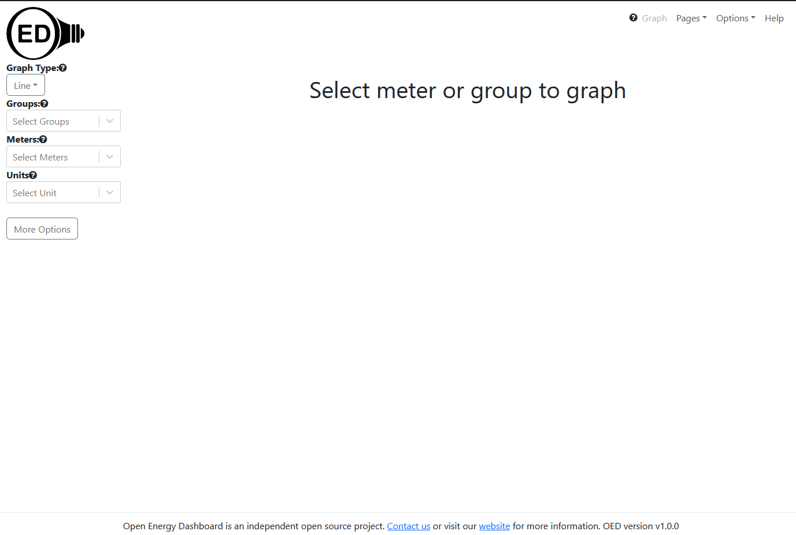

Developer Startup
Developer First Steps
Documentation overview
Developer documentation
Information
Starting
Codebase Info
Further Details
Version Release
This information is for developers of the OED software so this information is not usually of interest to a general user.
The update to the Redux Toolkit (RTK) is not yet reflected in the documentation. As a result, some information may be out of date.
The following steps should get you ready to contribute to OED in a fairly short period of time. Please know that we are here to help you so use the link at the bottom of the page to email/message us with any issues.
Prerequisites
- First, we strongly encourage you to contact the OED project as a potential developer. You can join our Discord channel with this Discord invite link or contact us. That way we know about you and can help you select tasks that will be interesting to you and also benefit the project.
- Before you can submit work to OED, you need to sign the Contributor's License Agreement.
- The OED project resides on GitHub so you need a login to contribute to the project.
- If you are using Windows 10+ then you will probably want to use the Windows Subsystem for Linux (WSL) that allows Docker to run on Windows. Please see this page for the steps you need to follow these extra steps. Installing WSL before Docker is helpful with the setup. Please be sure to see the information on the WSL page (link earlier in this bullet) about using the Linux filesystem for OED and running Visual Studio Code under WSL if you are using Windows. You need to read this even if you already had WSL and/or Visual Studio Code.
- OED uses the Docker container system to run the software so you need to download and install Docker. (You need both Docker and docker compose but you generally get those together during the install.) There are paid subscriptions but your non-commercial work on the OSS OED project does not require a paid subscription. This has the advantage that our configuration files for Docker can get any needed software and also means we do not modify your normal system since the setup is in a separate container that does not impact other programs on your computer. Note that Docker should run on all OSes (Linux, Mac OS X, Windows - see above for information on using WSL on Windows) so you should be able to use it.
- You are welcome to use any IDE for code development. Having said that, most OED developers use Visual Studio Code (VSC). The OED repository contains the .devcontainer folder that allows VSC to automatically launch and set up the needed Docker containers. There are a number of advantages to this system including that it puts in the extensions that OED thinks are valuable, gives a guaranteed environment to work with OED and avoids you having to separately install OED. Thus, you are encouraged to install VSC (if you don't already have it. The directions for working outside VSC follow the ones for VSC.
- Once you have VSC installed, you need to add one extension to it so you can work with the OED container. Click on the Extensions manager icon on the far left of the VSC window (), search for "Remote Development" and install it. You will get several Extensions included with this one.
- OED uses the fork model for development. (There are many descriptions of this process on the web but GitHub ones include a general one and one with more operational details.) This means you need to go to the main OED GitHub page (after login to GitHub), fork the project onto your own GitHub account and then clone the forked copy onto you own development machine to work on the code base. You can place the clone anywhere you want on your machine but please note what is stated on the WSL page linked above about where it should go on WSL. Note the clone will place all the files inside a new directory named OED unless you put a "." at the end of the
git clonecommand. This model has the advantage that you can commit and push to your account without needing write permission on the main OED project repository. There are separate directions of the steps for creating a pull request to integrate your code into OED.
Installing OED in Visual Studio Code
- Make sure you have Docker running on your system so OED can use it to get running.
- Assuming you are using VSC, you will do the following (steps to setup outside VSC are below):
- Open the cloned OED repository that is on your local machine in VSC by doing File -> Open Folder... You need to open the main OED folder that was created when you cloned OED. It has the README.md file, the src/ directory, the package.json file and lots of other files.
- Typically, VSC will ask if you want to reopen the folder in a container by showing this message:
You can click the button "Reopen in Container". You will often see a popup in VSC that indicate you can click to see the log:
The first time OED installs it can take a while where the time depends on the speed of your machine and internet connection (to get the needed npm packages). You can see the output of the install and anything OED outputs to the console by looking at the file nohup.out that will be created in your main OED directory. If you open this in VSC it should update with new lines at the bottom as they are added. See full install output or install without Postgres or npm install output to see a typical install output and for information if something goes wrong.
If VSC does not automatically ask to open in a container, you can click the "Remote Container" icon (
 ) that is normally in the bottom, left of the VSC window and select "Reopen in Container" for the menu that appears.
) that is normally in the bottom, left of the VSC window and select "Reopen in Container" for the menu that appears.Once OED is running you should be able to see the web and database Docker containers. See Useful VSC information for more info on doing this.
You can shut down the OED VSC container by clicking the green icon for the Remote Container and selecting "Close Remote Container"
Using OED
- Once you have OED installed and running, you will want to open it in a web browser. It should not matter which one you use. Enter the address:
localhost:3000and load the page. "localhost" indicates the page is being served up from your machine and "3000" is the default port that OED uses to accept web connections. If all went well, you will see the main OED web page that looks something like:
If you see that then the basic OED install worked and your system is properly serving up the OED web system.
- Though not common, it is possible for the OED web system to run without starting the underlying database system. To verify that the database is running properly, you should log into OED as the admin. The username and password were shown during the install process. By default they are:
email: test@example.com
password: password
Yes, the password really is password but remember it is running on your local machine in a container so it should not be accessible to others. If it fails you should see a message appear briefly in the top, right corner of the page. If this happens, please follow the steps below to email us the output in your terminal. - If all went well, you now have a fully running development version of OED that can be used to begin coding. Congratulations!
OED test data
When you install OED, it does not have any data. An actual site would connect up meters to gather data. For a developer, we have standard test data you can use. The OED test data page has information and directions for doing this. We suggest you load up the data now so you can try any features you want in OED. Note that an advantage of this test data is that it is the same for all developers so people should be able to reproduce what you mention if you have a question or issue.
Technologies OED uses
OED uses a number of technologies. You may want further information on these and some are provided on the OED technologies page. We welcome your input on other areas you would like to know about or other resources you find valuable. Note that you can work on parts of OED without knowing many of the technologies in any depth. For example, you can work on database queries without knowing about the front-end. Thus, many developers begin in areas they know or want to learn first and focus on that needed information. Having said that, almost the entire code base is in JavaScript/TypeScript so a basic understanding of that is usually needed to get started.
OED GitHub Information areas
There are two areas on our GitHub repo that are worth noting. First, the discussion board has several areas including one for developers. You are encouraged to subscribe to this discussion by clicking the button on the right side of the page with this discussion group. Second, the projects have an overview of the status of work and major initiatives.
Choosing OED work to do
The What to Work on in OED page can help you figure out what to do.
Multi-author work
It is common for a team to work on OED together. If you are doing this and want to give another person acknowledgement on a commit, then see GitHub info on multiple authors.
Issues
If you have any issues please copy all the output from your nohup.out (or the terminal outside Visual Studio Code) and send it and a message by contacting us. We will look it over and get back to you. We try to do that quickly. It is also fine to send a message to the developer Discord channel to seek answers.
Useful VSC information
- The VSC container you are working in has the Docker extension included. You can access it by clicking the whale with squares over it icon (
 ) on the far left side of the VSC window (default location). It should show information on all the Docker images/containers you have. The containers that are currently running have a green triangle next to them. You can get the following choices by right clicking on a container:
) on the far left side of the VSC window (default location). It should show information on all the Docker images/containers you have. The containers that are currently running have a green triangle next to them. You can get the following choices by right clicking on a container:- View Logs: The web container (prefixed with “vsc-”) will not show much since the OED output is in nohup.out. The database one will show messages from PostgreSQL. These open a new terminal that you can remove with the trash can icon.
- Attach Shell: This puts you in a shell within the container that is using the OED environment. It is important to recognize this is not the same as opening a shell on your machine that runs in your local environment. You are strongly encouraged to run all your OED terminal commands in the container so you get the OED environment. For example, it will use the version of node or npm that OED expects.
- In the shell inside the database you can do: “psql -U oed” to open the Postgres command line. This will allow you to look at the live OED database. You can also see the OED startup files for the database with: ls docker-entrypoint-initdb.d.
- In the shell inside the web container, you can look at the environment variables or do other Linux operation. You can run any script in package.json, e.g., npm run check. You can see all the running processes with “ps -aux”.
- Inspect: Opens a JSON file that gives detailed information on the container that can be useful for debugging issues.
- Open in Browser: For the web container, this will go to localhost:3000.
- Stop, Remove: Stop or remove the container where stop is useful if something does not shut down properly.
- The VSC container also include several extensions OED thinks are valuable:
- GitLens: This shows detailed information on Git commits, who made changes, file history and more. It makes working with Git inside VSC much nicer.
- Code Spell Checker: It will help you avoid spelling mistakes.
- GitHub Pull Request: It lets you work with GitHub within VSC including creating, commenting on and working with pull requests all with VSC features.
- Docker was discussed above.
Install OED outside of Visual Studio Code
While there is further information on more advanced options for doing this, the initial install can be done by following these steps:
- Open a terminal on your computer (it is the "command prompt" on some Windows systems). It is fine to use a terminal within VSC. In the terminal do the following:
cd "directory with cloned OED". You need to replace "directory with cloned OED" with the location of the cloned copy of OED. This is where the "README.md" and other main OED files are located. Some people find it easiest to locate that directory using the file manager on their OS and then use that information to get to the needed directory. As an example, you might docd /home/username/projects/OEDif you cloned OED in the /home/username/projects/ directory.docker compose up
This will run the entire OED install process. Note that on some systems (mostly some Linux systems), depending on how you installed Docker, you may get a permission error so you will need to do:sudo docker compose up
which runs the process with root privileges. If this is the case then you need to do sudo before all docker commands on your system.
Depending on the speed of your machine and internet connection, this can take a few to ten minutes. It should go faster after the first install. You will see a lot of output about installing the database (Postgres), getting needed packages (this can take a while so you may not see output for a while) and starting up the web system. When you see the line:
+ 2073 hidden modules
where the actual number will likely be different then OED should be running normally unless there was an error in the output.
- The developer web pages assume you assess a terminal inside of the Docker container. Normally you can do this by going to the Docker icon for your running Docker and selecting the "Dashboard". Then look for your running OED container in the list. There should be an icon to the right that gives a "CLI". Clicking it should get you a command line interface for either the web or database container that OED uses. You can do other operations to control container through the same interface. You can also do this within VSC with the Docker extension even though you started OED outside VSC.
- The developer pages often refer to output from OED. This goes to the nohup.out file with Visual Studio Code. When installed outside of VSC it will come to the terminal where you started OED, even in a terminal opened in VSC to install OED.
Getting help
If you want help or have questions about running OED, then see the website or the documentation pages and contact information in the links on this page.